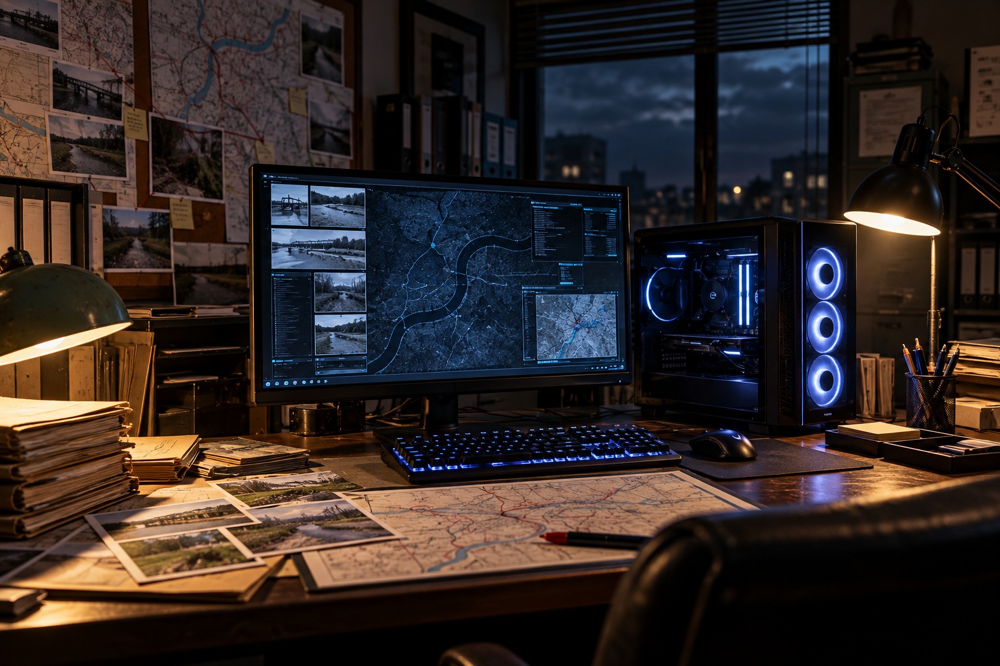

ミスターXからの挑戦状
事件ファイル Ver.2 考察編
捜査資料照合システム
資料を自分で選び、必要に応じて2枚を比較してください。記録と推測は区別して考えてください。
5件の事件の位置関係
女刑事
「いきなりルートを追う前に、まず5件の事件がどこで起きたのかを調べましょう。」
「それぞれの目撃地点、遺体発見地点などの位置関係を、参考地図で一つずつ確かめてください。」
「地理的な近さだけで、事件同士が関連していると結論づけることはできません。」
5件の全体地図
これは現在の位置関係を確認するための参考地図です。半径10kmの円の比較は、A〜Eの個別調査後に行います。
全体地図を確認しています…
事件ファイル
地点を示す画像を開き、位置関係を確認してください。画像を押すと拡大できます。
捜査資料一覧
見たい事件を選んでください。地図の参考位置は、事件当時の状況を再現するものではありません。
資料名を確認し、「1枚を見る」「左に選ぶ」「右に選ぶ」から選択してください。別の事件の画像も組み合わせられます。
選択した資料
捜査資料の比較
左と右の画像をそれぞれ選んでください。画像を押すと個別に拡大します。
この画面は機能確認用です。今は2枚を自由にセットできます。実際の公開版では、各事件の候補2枚を事前に決めます。
※選択の正解・不正解はここでは表示しません。地理的な近さや事件の関連を自動判定するものではありません。
5件の捜査資料
記録した画像を確認できます。選択が正しいかどうかは表示しません。修正したい場合は、比較画面で別の画像を記録してください。
ルートナビ照合
先にルートナビを確認し、あとから捜査資料の中で関係すると思う地点を選びます。ルートは検証用の仮説であり、当時の実際の移動経路を示すものではありません。
ルートナビ
まずルートを確認してください。続いて、関係すると思う資料を候補一覧から選択します。
候補は現在登録されているすべての画像です。A〜Eの資料は事件ごとに固めず、順番を混ぜて表示します。今回のテストでは3枚を選んで記録します。正解・不正解は表示しません。
まだ選択されていません。
すべての捜査資料から選ぶ
「画像を確認」で資料を1枚ずつ拡大できます。PNGの名前はそのまま表示します。資料の並び順は毎回同じなので、メモを使って再調査できます。
ルート照合の捜査記録
各ルートで選んだ画像を表示します。正解・不正解の判定はしません。
Cちゃん 略図から現在の地点へ
過去の略図、現在の2つの橋、現在の3地点を順番に見比べます。画像を押すと拡大できます。
まず当時の略図を調べる
この略図に描かれた橋や川、道路の位置関係を確認してください。
現在の2つの橋を比較する
小さな橋と、現在のバイパスの大きな橋。それぞれのストリートビューと位置を確認してください。
どちらの橋が当時の略図により整合するでしょうか。橋の規模だけではなく、川の曲がり方や周辺の道路も見比べてください。
画像は現在の参考資料です。当時と地形や道路が変化している可能性があり、どちらかを史実として断定するものではありません。
略図と現在の3地点を照合する
当時の略図と、現在の3地点の参考地図を見比べてください。
右側の地図を切り替えられます。「尾島公園周辺」「最終目撃地点周辺」「遺体発見現場周辺」の順に確認できます。
当時の略図と現在の道路・橋・川の形が、完全に一致するとは限りません。現在の地図は参考位置を示すものであり、当時の移動経路や出来事を証明するものではありません。